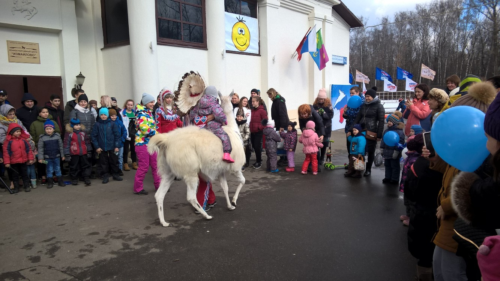

The 1st of December 2001 - meeting of "Unity" (Sergey Shoigu, Единство), "Fatherland" (Yury Luzhkov, Отечество), "All Russia" (Mintimer Shaimiev, Вся Россия)
The 20th of November 2002 - Boris Gryzlov becomes a charman of the high council
The way of national success. The 29th of March 2003
The 20th of September 2003. The first political program and candidates
The 24th of December 2003. United Russia
Why Putin so popular?
The high costs of exploration and of oil and gas in Russia's inhospitable physical and investment climate, as well as stifling government control, make economic slowdown a real possibility.
Lack of predictability and insufficient protection of investor rights is a strong deterrent to foreign investment, specifically in non-natural resources sectors of the economy. If these sectors do not grow, the Russian economy will be at the mercy of fluctuations in commodity prices.
Instead of privatizing Gazprom, however, Russia has transferred to it a significant part of the oil sector and is using the giant company as an instrument of foreign policy. As the government's appetite for spending grows, Russia will likely have to rely on its stabilization fund to finance the government budget. The Kremlin may be faced with mounting economic difficulties sooner than expected.
Now In "United Russia" is more than 2 million people. And this number is growing. Of these, 40% is employed in industry and education, 5,5% work in agriculture. And almost 8% - health workers, about 4,5% - workers of culture and art. There are students and pensioners, of course, there are officials. So, in the civil service and in government now more than 13% of members of United Russia is more than a tenth.
United Russia likes horses
